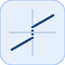

Type de bloc : coulombViscousFriction
| Paramètre | Description |
|---|---|
| ports d entree | 1 port(s) d entree declare(s). |
| Paramètre | Description |
|---|---|
| ports de sortie | 1 port(s) de sortie declare(s). |
Friction statique : terme visqueux Gain*u plus terme de Coulomb signe Offset*sign(u).
| Module | nflow_blocks |
| Bibliotheque | Non lineaire |
| Type | coulombViscousFriction |
| Libelle | Coulomb & Viscous Friction |
Description
Modelise une caracteristique de friction statique combinant un terme visqueux proportionnel a l'entree (Gain) et un terme de Coulomb de magnitude fixe (Offset) opposant le sens du mouvement : y = Gain*u + Offset*sign(u). Comme sign(0) = 0, la sortie vaut exactement 0 au repos. Deux segments paralleles avec un saut de 2*Offset a l'origine. Scalaire ou vecteur (element par element).
Ports
Entree(s)
| Port | Role | Cote | Position |
|---|---|---|---|
| Port_1 | Signal numerique lu par le bloc. | gauche | x=0, y=40 |
Sortie(s)
| Port | Role | Cote | Position |
|---|---|---|---|
| Port_1 | Signal numerique produit par le bloc. | droite | x=80, y=40 |
Parametres
| Parametre | Valeur par defaut |
|---|---|
Gain |
1 |
Offset |
1 |
Caracteristiques du bloc
| Type de bloc | coulombViscousFriction |
| Famille | Non lineaire |
| Taille rendue | 80 x 80 |
| Phases | ALGEBRAIC |
| Etat interne ou historique | non |
| Type de donnees du signal | valeurs numeriques double |
Algorithmes
Equation ou regle
$$y = \text{Gain}\cdot u + \text{Offset}\cdot \operatorname{sign}(u)$$Capacites etendues
Sources d implementation
Generation de code : prise en charge pour C et Rust.
d.blocks={ struct('id','c','type','constant','inputs',0,'outputs',1,'params',struct('Value',2)), struct('id','f','type','coulombViscousFriction','inputs',1,'outputs',1,'params',struct('Gain',2,'Offset',3)), struct('id','w','type','toWorkspace','inputs',1,'outputs',0,'params',struct('VariableName','y','SaveFormat','Array')) };
d.connections={ struct('from','c','to','f','fromIndex',0,'toIndex',0), struct('from','f','to','w','fromIndex',0,'toIndex',0) };
d.sampleTime=0.1; d.duration=0.2; d.solver='discrete'; d.variables=struct();
r=jsondecode(__nflow_simulate__(jsonencode(d)));| Version | Description |
|---|---|
| 1.0.0 | initial version |